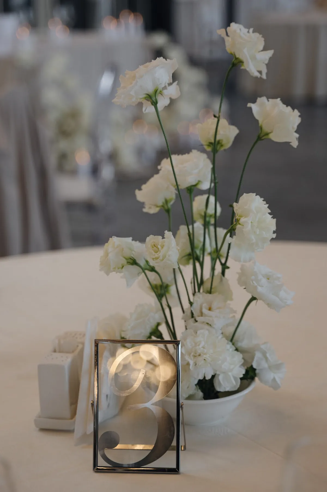
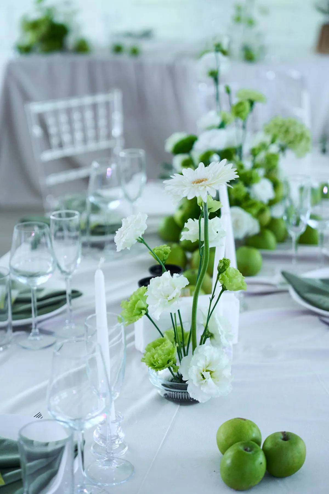

На камерной свадьбе каждый гость сидит близко к декору и видит детали: фактуру ткани, сорта цветов, карточки с именами. Поэтому оформление здесь — не про масштаб, а про качество и продуманность. Рассказываем, как оформить свадьбу на 30–50 гостей, на примерах наших проектов на 40–45 гостей.
Детали вместо масштаба
В большом зале декор работает издалека, на камерной свадьбе — с расстояния вытянутой руки. Выбирайте материалы с фактурой: шёлк, лён, бархат, цветы с интересной формой. Повторите палитру в мелочах — салфетках, лентах, карточках. В свадьбе «Белый сад под стеклом» на 40 гостей композиции из белых цветов и зелени стоят прямо на полу у президиума, а лестница увита живой гирляндой с антуриумами — и зал выглядит как сад.
Один стол или несколько
- Один длинный стол. Атмосфера семейного ужина: гирлянда из зелени и цветов вдоль стола, свечи. Подходит, если зал вытянутый.
- Несколько круглых столов. Гостям удобнее общаться в своих компаниях; каждый стол оформляют низкой композицией, чтобы видеть друг друга.
Подробнее — в статье про декор свадебного стола.
Что особенно заметно на камерной свадьбе
- Карточки и номера столов. Именные карточки, меню, номера в стекле или рамках.
- Свечи. В небольшом зале свечи создают атмосферу ужина. Подробнее — в статье про свечи на свадьбу.
- Текстиль. Скатерти, дорожки и салфетки в палитре свадьбы.
- Флористика. Меньше объёма, но интереснее сорта и сочетания.


Площадка
Камерной свадьбе подходит площадка, которая не будет казаться пустой: стеклянный зал, павильон, ресторанный зал или терраса. Если зал всё же большой, его зонируют драпировкой и светом. Наши свадьбы этого формата: стеклянный зал на 40 гостей, летний шатёр на 40 гостей, прозрачный лофт на 45 гостей и усадьба на 45 гостей.
Как заказать
Расскажите о дате, площадке и числе гостей и пришлите референсы — предложим идею и посчитаем смету за 24 часа. Камерный формат удобен тем, что бюджет можно вложить в качество материалов и детали. Из чего складывается смета — в статье про стоимость оформления свадьбы.
Частые вопросы
Нужен ли декоратор для свадьбы на 30–50 гостей?
Да, если важна атмосфера: на камерной свадьбе гости видят декор вблизи, и детали становятся заметнее.
Один длинный стол или несколько круглых?
Длинный стол создаёт атмосферу семейного ужина, круглые удобнее для общения в компаниях. Выбор зависит от формы зала и гостей.
Как не потеряться в большом зале с маленьким числом гостей?
Зонировать пространство драпировкой и светом и собрать столы ближе друг к другу.